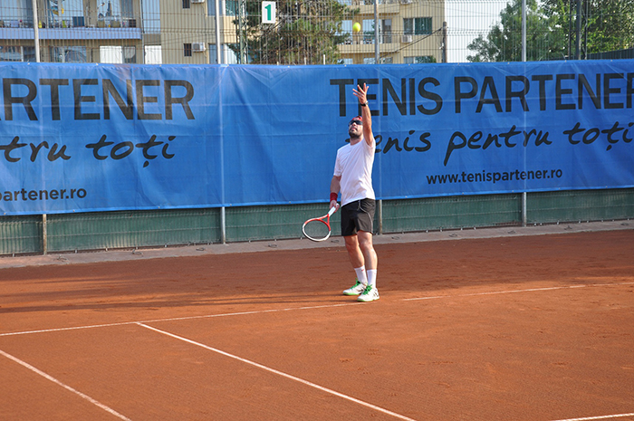
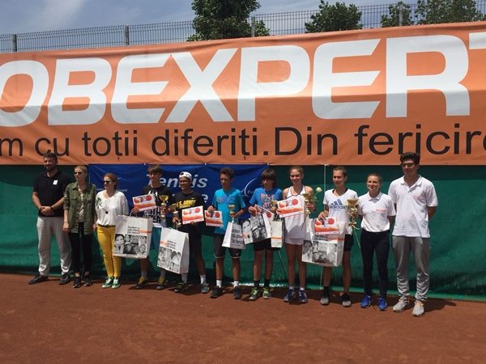

Platinum Mamaia Idu
Turneul Platinum Mamaia este unul dintre cele mai apreciate concursuri din România pentru pasionații de tenis de orice vârstă și orice nivel, se desfășoară an de an la Tenis Club Idu, ce oferă condiții de joc la standarde ridicate. Concursul face parte din circuitul Tenis Partener și are o tradiție de 10 ani într-un circuit plin de turnee pe toată suprafața României. Cel organizat la Mamaia este de categoria Platinum, cea mai înalta posibilă, reușind să atragă jucători și turiști din toată tara. Numărul anual de jucători înscriși este în jur de 180 de persoane, organizate pe nivel de joc, începând de la nivelul 4 până la nivelul 9. Nivelul 4 este recomandat persoanelor care abia încep să descopere tenisul, vor să cunoască persoane noi și să învețe mai multe despre sportul acesta. Dacă jucătorii din acest circuit progresează, ei vor fi promovați la un nou nivel superior pentru o evoluție continuă, cu meciuri cu adversari din ce în ce mai buni. Nivelul 9, cel mai înalt, este dedicat celor ce vor să devină jucători profesioniști sau sunt retrași din zona profesionistă și doresc să aibă meciuri de un nivel cât mai bun.-

Juniors Cup Mamaia Idu - Wilson Cup
Juniors Cup se adresează juniorilor din tenis cu vârsta de maximum 16 ani, iar ultimul turneu desfășurat, în anul 2019, a fost a 27-a ediţie anuală. La acest turneu sunt surprinși cei mai promițători juniori din toată Europa, România având însă cei mai mulți jucători participanți. Competiţia este înscrisă în calendarul Tennis Europe Juniors Tour, fiind clasficată la categoria a II-a, participând cu regularitate reprezentanţi din Bulgaria, Franţa, Moldova, Serbia şi Slovenia, alături de reprezentanţii României. Meciurile sunt mereu de o calitate înalta, competitivitatea acestor juniori promițători fiind foarte mare.